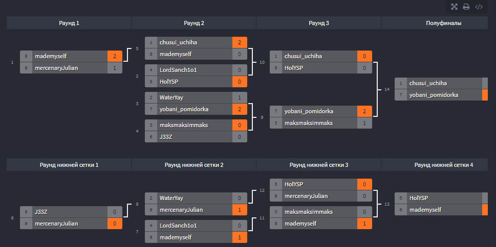

Списки с некоторой информацией
2018 год
- 07.11 My Little Pony Equestria Girls
- 14.11 My Little Pony Equestria Girls: Rainbow Rocks
- 21.11 My Little Pony Equestria Girls: Friendship Games
- 28.11 My Little Pony Equestria Girls: Legend of Everfree
- 05.12 Зверополис
- 12.12 "9(Nine)"
- 19.12 My Little Pony(2017)
- 28.12 Хранители Снов
2019 год
- 11.01 1+1
- 18.01-15.03 Пила 1-8
- 22.03 Пассажиры поезда 123
- 29.03 Собачья жизнь
- 05.04 Воспоминания о Марни
- 12.04 Мост в Терабитию
- 19.04 Человек-Паук: Через Вселенные
- 03.05 Дедпул
- 10.05 Дедпул 2
- 17.05 Навсикая из долины ветров
- 24.05 Вечерний экспресс «Сансет Лимитед»
- 31.05 Ходячий замок
- 14.06 Убойные каникулы
- 14.06 Initial D - Third Stage
- 21.06 Город героев
- 28.06 Унесённые призраками
- 05.07 Бойцовский клуб
- 19.07 Грань будущего
- 24.07 Тайна Коко
- 28.07 Исходный код
- 03.08 Хатико
- 09.08-04.10| Форсаж 1-Хоббс и Шоу
- 11.10 Большой Куш
- 25.10 Initial D - Экстремальные гонки
- 01.11 Silent Hill
- 08.11 Богемская рапсодия
- 15.11 Initial D: Legend 1
- 15.11 Initial D: Legend 2
- 22.11 Initial D: Legend 3
- 28.11 Матрица
- 05.12 Матрица: Перезагрузка
- 09.12 Вольт
- 13.12 Матрица: Революция
2020 год
- 31.01 Очень страшное кино
- 20.03 Сад изящных слов
- 03.04 Джокер (2019)
- 10.04 Несносный дед
- 01.05 Человек-Паук
- 08.05 Человек-Паук 2
- 15.05 Человек-Паук 3
- 22.05 Новый Человек-Паук
- 29.05 Новый Человек-Паук: Высокое напряжение
- 05.06 Дитя Погоды
- 12.06 Железный человек
- 19.06 Железный человек 2
- 26.06 Первый мститель
- 27.06 Тор
- 03.07 Мстители
- 04.07 Железный человек 3
- 10.07 Тор 2: Царство тьмы
- 11.07 Первый мститель: Другая война
- 17.07 Стражи Галактики
- 18.07 Стражи Галактики 2
- 22.07 Вперёд
- 24.07 Мстители: Эра Альтрона
- 30.07 Человек-Муравей
- 31.07 Первый Мститель: Противостояние
- 31.07 Код Гиас: Воскресший Лелуш
- 07.08 Доктор Стрэндж
- 14.08 Человек-Паук: Возвращение Домой
- 21.08 Тор: Рагнарёк
Турнир фракций
1. Jackbox
ЛОХ-СОСТАВ
- HolYSP: 2 место (2)
- malvina_ma: 3 место, 3 место (2)
ЛИГА ЭЛЬФОВ
- wateryay: 2, 3 места
АНТИМАГИЧЕСКИЙ ОРДЕН
- yaleretayaeryl: 1,1 места, 3 место (2)
ДВОРФДАН
- diaz_380: 1,1,1,2,3,3 места
ОТРЯД СТАЛКЕРОВ
- AsterAc: 1,2,2,2,3,3 места (2)
- mercenaryJulian: 2 место, 1,2,2,4 места (2)
ВЕЛИКАЯ ОРДА
- kunahare_tsun `-`
2. Dark Souls
Ответ: 25 смертейАНТИМАГИЧЕСКИЙ ОРДЕН
- yaleretayaeryl (23): 1 место (2)
- chusui_uchiha (27): 1 место (2)
ЛОХ-СОСТАВ
- 0living_person0 (17): 2 место (4)
- malvina_ma (45)
- HolYSP (53)
- yobani_pomidorka (73)
ОТРЯД СТАЛКЕРОВ
- mercenaryJulian (35): 3 место
3. SiGame
КУЛЬТ МЁРТВЫХ
- Svaiat: 3,4 места (1ф)
ЛОХ-СОСТАВ
- yobani_pomidorka: 4В + пак (2ф)
- HolYSP: 1,2,4 места (2)
АНТИМАГИЧЕСКИЙ ОРДЕН
- yaleretayaeryl: 1,3,4 место (2)
ДВОРФДАН
- Diaz_380: 1,1,1 места
ОТРЯД СТАЛКЕРОВ
- AsterAc: 3,4 места (2)
- mercenaryJulian: 2 место (2)
ЛИГА ЭЛЬФОВ
- wateryay: 1В + пак, 4 место
4. Крокодил-рисунки
АНТИМАГИЧЕСКИЙ ОРДЕН
- yaleretayaeryl (28) - 1 место
- chusui_uchiha (2)
ОТРЯД СТАЛКЕРОВ
- mercenaryJulian (22) - 2 место
ЛИГА ЭЛЬФОВ
- wateryay (13)
ДВОРФДАН
- Diaz_380 (14) - 4 место
ЛОХ-СОСТАВ
- malvina_ma (3)
- 0living_person0 (1)
- HolYSP (1)
- yung_aaalik (4)
- Mode_Of_God (3)
КУЛЬТ МЁРТВЫХ
- Svaiat (2)
Результаты:
- 1. ОТРЯД СТАЛКЕРОВ
- 2. ДВОРФДАН
- 3. АНТИМАГИЧЕСКИЙ ОРДЕН
- 4. ЛОХ-СОСТАВ
1. Jackbox
ЛОХ-СОСТАВ
- HolYSP: 1 место (вс6), 1 место (3), 3 место (2), 1 место (3)
- Mode_Of_God: 2 место (3)
- yobani_pomidorka: 3 место (3), 2 место (3)
ЛИГА ЭЛЬФОВ
- wateryay: 3 место (вс5), 3 место (вс6), 3 место
АНТИМАГИЧЕСКИЙ ОРДЕН
- yaleretayaeryl: 2 место (вс5)
- chusui_uchiha: `-`
ОТРЯД СТАЛКЕРОВ
- AsterAc: 2 место (2 вс6)
- mercenaryJulian: 4 место (вс5), 2 место (вс6), 3 место (2 вс6), 3 место (2), 2 место (вс7), 1 место (вс7), 2 место
2. Dark Souls
Ответ: 31 смертейАНТИМАГИЧЕСКИЙ ОРДЕН
- chusui_uchiha (35): 3 место
ЛОХ-СОСТАВ
- 0living_person0 (27): 3 место (3)
- malvina_ma (23): 4 место (3)
- HolYSP (20)
ОТРЯД СТАЛКЕРОВ
- mercenaryJulian (28): 2 место
КУЛЬТ МЁРТВЫХ
- Svaiat (30): 1 место
АССАСИНЫ
- MrJames298 (40): 5 место
3. SiGame
КУЛЬТ МЁРТВЫХ
- Svaiat: 1,4,4 места (1ф)
ЛОХ-СОСТАВ
- yobani_pomidorka: 2,5В, (3ф (2))
- HolYSP: 1В, 3 место (2) (2ф), 1 место
АНТИМАГИЧЕСКИЙ ОРДЕН
- yaleretayaeryl: 1 место(2) (2ф), 2,2,4 места
ОТРЯД СТАЛКЕРОВ
- AsterAc: 4 место (2ф)
- mercenaryJulian: (2ф (2)), 1,5В +пак, 1 место
ЛИГА ЭЛЬФОВ
- wateryay: (4ф), 1 место (1ф), 2,3 места (3ф)
4. Угадай мелодию
ЛОХ-СОСТАВ
- HolYSP(15): 3 место
- 0living_person0(3)
АНТИМАГИЧЕСКИЙ ОРДЕН
- yaleretayaeryl(35): 1 место
ДВОРФДАН
- fakeregem(18): 2 место
ОТРЯД СТАЛКЕРОВ
- mercenaryJulian(5)
ЛИГА ЭЛЬФОВ
- wateryay (9)
КУЛЬТ МЁРТВЫХ
- Svaiat(18): 2 место
5. OVERWATCH
- 1. количество выигрышей: 2 ПОБЕДЫ
- 2. максимальное число убийств: 24 УБИЙСТВА
- 3. минимальное число смертей: 4 СМЕРТИ
КУЛЬТ МЁРТВЫХ
- Svaiat (3w, 45k, 10d)
ЛОХ-СОСТАВ
- HolYSP (4w, 31k, 3d)
- 0living_person0 (2w)
АНТИМАГИЧЕСКИЙ ОРДЕН
- yaleretayaeryl (2w, 39k, 21d)
Результаты:
- 1. ОТРЯД СТАЛКЕРОВ [•]
- 2. АНТИМАГИЧЕСКИЙ ОРДЕН [↑]
- 3. ЛОХ-СОСТАВ [↑]
- 4. ДВОРФДАН [↓↓]
- 5. ЛИГА ЭЛЬФОВ
1. Jackbox
ЛОХ-СОСТАВ
- HolYSP: 1, 4 места (вс7), 1, 3 места (вс6), 1, 4 места (2)
- yobani_pomidorka: 1, 1, 3 места (2), 2 место
ЛИГА ЭЛЬФОВ
- wateryay: 1, 3 места (вс6), 2, 4 места (вс7), 2, 3 места
АНТИМАГИЧЕСКИЙ ОРДЕН
- yaleretayaeryl: 1 место (вс7), 2 место
ОТРЯД СТАЛКЕРОВ
- mercenaryJulian: 2, 2 места (вс6), 1, 2 места, 3 место (вс7))
КУЛЬТ МЁРТВЫХ
- Svaiat: 2, 2 места (вс7)
2. Dark Souls
Ответ: 32 смертейАНТИМАГИЧЕСКИЙ ОРДЕН
- chusui_uchiha (33): 1 место
ЛОХ-СОСТАВ
- 0yobani_pomidorka (27): 3 место (3)
- malvina_ma (22): 4 место (3)
- HolYSP (19)
ОТРЯД СТАЛКЕРОВ
- mercenaryJulian (28): 2 место (2)
- senyach (14)
КУЛЬТ МЁРТВЫХ
- Svaiat (15)
АНТИМАГИЧЕСКИЙ ОРДЕН
- chusui_uchiha (24)
ЛОХ-СОСТАВ
- malvina_ma (25)
- HolYSP (33) - 1 место
ОТРЯД СТАЛКЕРОВ
- mercenaryJulian (25)
3. SiGame
ДВОРФДАН
- fakeregem: 1 место (3ф) + 1 балл
ЛОХ-СОСТАВ
- yobani_pomidorka: 2В
- virrogand: 1 место, 2 место (2), (2ф)
АНТИМАГИЧЕСКИЙ ОРДЕН
- yaleretayaeryl: 1,2,3 места, 1 полуместо, (1ф)
ОТРЯД СТАЛКЕРОВ
- mercenaryJulian: 2 место, 1В + пак
ЛИГА ЭЛЬФОВ
- wateryay: 3,3 места, 2 полуместо
4. OVERWATCH
- 1) количество выигрышей: 2
- 2) максимальное число убийств: 24
- 3) минимальное число смертей: 4
ОТРЯД СТАЛКЕРОВ
- mercenaryJulian (**2w**, __*24k*__, __*6d*__)
ЛОХ-СОСТАВ
- HolYSP (**2w**, __*28k*__, __*4d*__)
- 0living_person0 (4w)
- malvina_ma (3w, 16k, 8d)
АНТИМАГИЧЕСКИЙ ОРДЕН
- chusui_uchiha (**2w**, 31k, 8d)
Результаты:
- 1. ЛОХ-СОСТАВ [↑↑]
- 2. ОТРЯД СТАЛКЕРОВ [↓]
- 3. АНТИМАГИЧЕСКИЙ ОРДЕН [↓]
- 4. ЛИГА ЭЛЬФОВ [↑]
- 5. ДВОРФДАН [↓]
1. Jackbox
ЛОХ-СОСТАВ
- HolYSP: 1,1,3,4 места (2), 1 место (4), 3,3 места (3)
- yobani_pomidorka: 1 место (4), 3 место (2)
- virrogand: 1 место (3)
ЛИГА ЭЛЬФОВ
- wateryay: 1 место (4), 3 место
АНТИМАГИЧЕСКИЙ ОРДЕН
- yaleretayaeryl: 2,2,4,4 места
ОТРЯД СТАЛКЕРОВ
- mercenaryJulian: 1,1 места, 2 место (2)
2. Dark Souls
Ответ: 55 смертейЛОХ-СОСТАВ
- malvina_ma (45): 1 место (3)
- HolYSP (73)
- arxitriklin (43)
КУЛЬТ МЁРТВЫХ
- Svaiat (85)
3. SiGame
ЛОХ-СОСТАВ
- yobani_pomidorka: 2 место, 3Ф
- virrogand: 4 место (3)
- HolYSP: 2 место (2), 1В
АНТИМАГИЧЕСКИЙ ОРДЕН
- yaleretayaeryl: 3,3,2 места, 1Ф
ОТРЯД СТАЛКЕРОВ
- mercenaryJulian: 1 место (2), 1 место, 1В + пак, 2Ф
ЛИГА ЭЛЬФОВ
- wateryay: 1 место, 1В + пак
Результаты:
- 1. ЛОХ-СОСТАВ [•]
- 2. ОТРЯД СТАЛКЕРОВ [•]
- 3. АНТИМАГИЧЕСКИЙ ОРДЕН [•]
- 4. ЛИГА ЭЛЬФОВ [•]
- 5. ДВОРФДАН [•]
1. Угадай мелодию + SiGame Year Pack + Jackbox
ЛОХ-СОСТАВ
- HolYSP: 17 баллов, 7 баллов
АНТИМАГИЧЕСКИЙ ОРДЕН
- yaleretayaeryl: 19 баллов, 16 баллов, 1, 2 места, 1 место (2)
- chusui_uchiha: 6 баллов, 3,4 места (2)
ОТРЯД СТАЛКЕРОВ
- mercenaryJulian: 3 балла, 1,2 места
- AsterAc: 2 балла
ЛИГА ЭЛЬФОВ
- wateryay: 7 баллов, 3, 3 места
КУЛЬТ МЁРТВЫХ
- Svaiat: 4 балла, 5 баллов, 2,3,4 места
ДВОРФДАН
- fakeregem: 16 баллов, 30 баллов, 1, 4 места
2. Dark Souls
Ответ: 52 смертейЛОХ-СОСТАВ
- HolYSP (25, 45) - 2 место
АНТИМАГИЧЕСКИЙ ОРДЕН
- chusui_uchiha (47, 27) - 1 место
- yaleretayaeryl (29, 37)
ЛИГА ЭЛЬФОВ
- wateryay (42, 69) - 3 место
ЕДИНОЕ ЗЛО
- s0chn1k (25)
ОТРЯД СТАЛКЕРОВ
- mercenaryJulian (35)
3. SiGame
ЛОХ-СОСТАВ
- yobani_pomidorka: 3 место (2), 1 В, 2/3 В
- HolYSP: 2 место
АНТИМАГИЧЕСКИЙ ОРДЕН
- yaleretayaeryl: 1,3,3 места
ЛИГА ЭЛЬФОВ
- wateryay (42, 69) - 3 место
ОТРЯД СТАЛКЕРОВ
- mercenaryJulian: 1, 2 места, 1В + пак
ЛИГА ЭЛЬФОВ
- wateryay: 1, 2 места, 1/3 В
Результаты:
- 1. АНТИМАГИЧЕСКИЙ ОРДЕН [↑↑]
- 2. ЛОХ-СОСТАВ [↓]li>
- 3. ОТРЯД СТАЛКЕРОВ [↓]
- 4. ЛИГА ЭЛЬФОВ [•]
- 5. ДВОРФДАН [•]
1. Jackbox
ЛОХ-СОСТАВ
- HolYSP: 1, 4 места (4), 3 место (2), 3 место (3)
- yobani_pomidorka: 2, 3, 4 места (4), 3 место (2)
ЛИГА ЭЛЬФОВ
- wateryay: 3 место (4), 3 место (3)
АНТИМАГИЧЕСКИЙ ОРДЕН
- yaleretayaeryl: 2 место (4), 1 место (2), 4, 4 места
ОТРЯД СТАЛКЕРОВ
- mercenaryJulian: 1, 2 места (4), 1, 4 места (3), 2 место (2), 2, 3, 4 места
2. Dark Souls
Ответ: 41 смертейЛОХ-СОСТАВ
- HolYSP (**37**, ~~52~~) - 3 место
- yobani_pomidorka (**37**, 50) - 1 место
- arxitriklin (50, ~~70~~) - 6 место
- yung_aalik (35, ~~60~~) - 4 место
АНТИМАГИЧЕСКИЙ ОРДЕН
- chusui_uchiha (~~53~~)
- yaleretayaeryl (~~27~~, **37**) - 3 место
ЛИГА ЭЛЬФОВ
- wateryay (33, 50) - 2 место
ПАЛАДИНЫ
- Metalfol (47, ~~75~~) - 4 место
ОТРЯД СТАЛКЕРОВ
- mercenaryJulian (~~30~~, 51) - 7 место
- AsterAc (~~21~~, 33) - 5 место
КУЛЬТ МЕРТВЫХ
- Svaiat (~~30~~, 35) - 4 место
3. SiGame
ЛОХ-СОСТАВ
- yobani_pomidorka: 2В
- HolYSP: 1, 1 места (2)
АНТИМАГИЧЕСКИЙ ОРДЕН
- yaleretayaeryl: 3 место
ОТРЯД СТАЛКЕРОВ
- mercenaryJulian: 3 место (2), 1, 3 места, 1В +пак
ЛИГА ЭЛЬФОВ
- wateryay: 2, 2 места
4. Финал ТФ
| Место | Участник | Матч В-П-Н | Очки |
|---|---|---|---|
| 1 | ЛОХ-СОСТАВ | 4-0-0 | 20 |
| 2 | КУЛЬТ МЁРТВЫХ | 3-1-0 | 18 |
| 3 | АНТИМАГИЧЕСКИЙ ОРДЕН | 2-2-0 | 14 |
| 4 | ОТРЯД СТАЛКЕРОВ | 1-3-0 | 13 |
| 5 | ЛИГА ЭЛЬФОВ | 0-4-0 | 7 |

Результаты:
- 1. ЛОХ-СОСТАВ
- 2. АНТИМАГИЧЕСКИЙ ОРДЕН
- 3. ОТРЯД СТАЛКЕРОВ
- Лучший игрок ТФ№1: yaleretayaeryl
- Самый активный: HolYSP
- Лучший лидер: yaleretayaeryl
- Лучший джекбоксер: mercenaryJulian
- Лучший свояковец: yaleretayaeryl
- Лучший предсказатель: chusui_uchiha
1. ЛОХ-СОСТАВ: 496
Финал ТФ +40
- HolYSP +251
- yobani_pomidorka +109
- virrogand +27
- malvina_ma +22
- 0living_person0 +18
- yungaalik +11
- Mode_Of_God +8
- arxitriklin +5
- xxdreametxx +5
- sergeypahom
2. АНТИМАГИЧЕСКИЙ ОРДЕН: 440
Финал ТФ +28
- yaleretayaeryl +363
- chusui_uchiha +49
3. ОТРЯД СТАЛКЕРОВ: 433
Финал ТФ +26
- mercenaryJulian +351
- AsterAc +56
- senyach
4. ЛИГА ЭЛЬФОВ: 235
Финал ТФ +14
- wateryay +221
- vismutgames
5. ДВОРФДАН: 1905
- fakeregem +190
6. КУЛЬТ МЕРТВЫХ: 170
Финал ТФ +36
- Svaiat +113
- j33Z +21
7. ЕДИНОЕ ЗЛО: 10
- s0chn1k +10
8. ПАЛАДИНЫ: 7
- Metalfol +7
9. АССАСИНЫ: 1
- MrJames298 +1
- mrBars1k_nya
10. ВЕЛИКАЯ ОРДА: 0
- kunahare_tsun
- АЛЬЯНС ЛЮДЕЙ
- ГЕРОИ
- ГРИМУАР ПЕЧАТИ
- ФРОНТ ДРУИДОВ
1. Шифр
- +10 yaleretayaeryl
- +5 Svaiat
2. Предсказания
- +8 ddefamationn
- +8 maksmaksimmaks
- +6 chusui_uchiha
- +6 WaterYay
3. SiGame
СЕРДЦЕ НЕКРОМАНТИИ
- yobani_pomidorka - 2В
АВАНТЮРИСТЫ
- TollDwarf - 4 место
- mercenaryJulian - 3, 4 места
УКРЫТИЕ ТЕНИ
- mademyself__ - 1,1,2 места
- WaterYay - 3 место, 1В
ШТУРМ ФОРС
- yaleretayaeryl - 2, 4 места
- Buffoniwe1 - 1, 2 места
- -10 Gevork
4. Jackbox
СЕРДЦЕ НЕКРОМАНТИИ
- +6 yobani_pomidorka - 1 место
- +6 ddefamationn - 1, 2, 3 места
- +2 chusui_uchiha - 2, 4 места
АВАНТЮРИСТЫ
- mercenaryJulian - 2, 2, 2 места
- maksmaksimmaks - 3, 3, 3 места
УКРЫТИЕ ТЕНИ
- mademyself__ - 1, 4 места
- WaterYay - 2 место
- slohhh - 1, 2 места
ШТУРМ ФОРС
- Buffoniwe1 - 4 место
- -10 Gevork - 4 место
5. Настолки
СЕРДЦЕ НЕКРОМАНТИИ
- +1 yobani_pomidorka - 2 место (соло)
- +4 ddefamationn - 3 место (корова), 1 место (соло), 3 место (золото инков)
- -10 chusui_uchiha
АВАНТЮРИСТЫ
- +1 mercenaryJulian - 2 место (золото инков)
- +10 maksmaksimmaks - 3 место (золото инков)
УКРЫТИЕ ТЕНИ
- mademyself__ - 4 место (соло)
- +7 WaterYay
- +2 slohhh
- AsterAc - 2 место (корова)
ШТУРМ ФОРС
- yaleretayaeryl - 1 место (корова)
- +3 Gevork - 1 место (золото инков)
6. Мини-игры
СЕРДЦЕ НЕКРОМАНТИИ
- +7 yobani_pomidorka
- +30 ddefamationn
- +6 chusui_uchiha
- +3 J33Z
АВАНТЮРИСТЫ
- +20 mercenaryJulian
- +13 maksmaksimmaks
УКРЫТИЕ ТЕНИ
- +19 mademyself__
- +31 WaterYay
- +10 slohhh
ШТУРМ ФОРС
- +4 Mode_Of_God
- +13 Buffoniwe1
- +8 Gevork
РЕЗУЛЬТАТЫ:
- 1. УКРЫТИЕ ТЕНИ
- 2. СЕРДЦЕ НЕКРОМАНТИИ
- 3. АВАНТЮРИСТЫ
- 4. ШТУРМ ФОРС
1. Шифр
- +8 ddefamationn
- +8 yobani_pomidorka
- +8 HolYSP
- +8 WaterYay
- +8 J33Z
- +8 YungAaalik
2. Предсказания
- +25 J33Z
3. Jackbox
СЕРДЦЕ НЕКРОМАНТИИ
- +3 yobani_pomidorka - 2 место (2), 4 место
- -5 ddefamationn - 1, 2 места
- chusui_uchiha - 3 место
- J33Z - 1 место (2), 1 место
- riffiiii - 2 место
АВАНТЮРИСТЫ
- +6 mercenaryJulian - 3 место (2), 1, 1, 1, 2, 2, 2, 2, 4 места
- maksmaksimmaks - 3, 4 места
- +26 HolYSP - 1, 1, 3 места
- +4 LordSanch1o1 - 3 место
УКРЫТИЕ ТЕНИ
- +6 WaterYay - 1, 2, 3, 3 места
- +3 slohhh
ШТУРМ ФОРС
- +2 NEDRYG_lONOR - 4 место
4. SiGame
СЕРДЦЕ НЕКРОМАНТИИ
- +6 yobani_pomidorka - 1В
- ddefamationn - 2 место
- +10 J33Z - 3 место
АВАНТЮРИСТЫ
- mercenaryJulian - 2, 2, 3 места
- +10 fakeregem - 1,1,1 места
- HolYSP - 1 место, 2В
УКРЫТИЕ ТЕНИ
- WaterYay - 3 место, 1 В
- mademyself - 4 место
ШТУРМ ФОРС
- yaleretayaeryl - 4 место
- Buffoniwe1 - 2 место
5. Мини-игры
СЕРДЦЕ НЕКРОМАНТИИ
- +8 yobani_pomidorka
- +25 ddefamationn
- +4 chusui_uchiha
- +28 J33Z
АВАНТЮРИСТЫ
- +6 mercenaryJulian
- +10 maksmaksimmaks
- +16 LordSanch1o1
- +29 HolYSP
УКРЫТИЕ ТЕНИ
- +12 WaterYay
- +4 AsterAc
ШТУРМ ФОРС
- +2 Mode_Of_God
- +4 Buffoniwe1
РЕЗУЛЬТАТЫ:
- 1. АВАНТЮРИСТЫ [↑↑]
- 2. СЕРДЦЕ НЕКРОМАНТИИ [•]
- 3. УКРЫТИЕ ТЕНИ [↓↓]
- 4. ШТУРМ ФОРС [•]
1. Шифр
- +20 HolYSP
- +15 yobani_pomidorka
- +10 ddefamationn
- +1 mademyself
2. Предсказания
- +20 mercenaryJulian
- +15 HolYSP
- +15 maksmaksimmaks
- +10 ddefamationn
- +5 yobani_pomidorka
- +5 WaterYay
- +5 chusui_uchiha
- +5 mademyself
3. Jackbox
СЕРДЦЕ НЕКРОМАНТИИ
- yobani_pomidorka - 1, 2 места
АВАНТЮРИСТЫ
- mercenaryJulian - 2, 2 места (2), 1, 3 места, 2 место (3)
- LordSanch1o1 - 1 место
- HolYSP - 3, 3 места (2), 2, 2, 3, 4 места
- fakeregem - 2 место
- evfks - 1, 1 места
УКРЫТИЕ ТЕНИ
- mademyself - 2, 3, 3 места
- WaterYay - 1 место (2), 1, 2, 4 места, 3 место (3)
- AsterAc - 4 место
4. Мини-игры
СЕРДЦЕ НЕКРОМАНТИИ
- +4 yobani_pomidorka
АВАНТЮРИСТЫ
- +6 mercenaryJulian
- +2 LordSanch1o1
- +6 HolYSP
УКРЫТИЕ ТЕНИ
- +4 mademyself
- +2 WaterYay
- +8 AsterAc
ШТУРМ ФОРС
- +6 Buffoniwe1
5. SiGame
СЕРДЦЕ НЕКРОМАНТИИ
- yobani_pomidorka - 4 место, 1В
- J33Z - 4 место
АВАНТЮРИСТЫ
- HolYSP - 2, 3 места
- fakeregem - 1, 1 места
УКРЫТИЕ ТЕНИ
- mademyself - 2, 3 места
- WaterYay - 1В + пак
6. Настолки
СЕРДЦЕ НЕКРОМАНТИИ
- yobani_pomidorka - 2 место
- +15 J33Z - 1 место
АВАНТЮРИСТЫ
- maksmaksimmaks - 3 место (2)
- +4 fakeregem
- +14 HolYSP - 1 место (2)
УКРЫТИЕ ТЕНИ
- +4 mademyself - 4 место
- +12 WaterYay - 3 место, 2 место (2)
7. Брось мне вызов
СЕРДЦЕ НЕКРОМАНТИИ
- +1 yobani_pomidorka - [1-2] (Brawlhalla)
- J33Z - [2-0] (CS:GO: 16/8, 16/9)
- +1 chusui_uchiha - [0-1] (Шашки)
АВАНТЮРИСТЫ
- mercenaryJulian - [1-0] (Шахматы)
- +1 maksmaksimmaks - [0-1] (Шашки)
- +10 fakeregem - [1-1] (Шахматы)
- +1 HolYSP - [0-2] (Dota 2: SF, Pudge)
УКРЫТИЕ ТЕНИ
- mademyself - [2-0] (osu!)
- +1 WaterYay - [1-2] (osu!)
РЕЗУЛЬТАТЫ:
- 1. АВАНТЮРИСТЫ [•]
- 2. СЕРДЦЕ НЕКРОМАНТИИ [•]
- 3. УКРЫТИЕ ТЕНИ [•]
- 4. ШТУРМ ФОРС [•]
1. Шифр
- +15 chusui_uchiha
- +10 HolYSP
2. Предсказания
- +14 mercenaryJulian
- +14 HolYSP
- +14 maksmaksimmaks
- +12 WaterYay
- +10 yobani_pomidorka
3. Jackbox
СЕРДЦЕ НЕКРОМАНТИИ
- yobani_pomidorka - 4 место
- J33Z - 1, 2, 3 места, 3 место (2)
- owleren - 1, 3, 4 места
- chusui_uchiha - 2, 2 места
АВАНТЮРИСТЫ
- mercenaryJulian - 1 место
- HolYSP - 1, 1, 1, 3, 4 места
- redi_x_ - 3, 4 места
- evfks - 2 место, 1 место (2)
- maksmaksimmaks - 1, 3, 3 места
УКРЫТИЕ ТЕНИ
- WaterYay - 3, 4, 4 места
- FrayZTV1 - 1, 2, 3, 3 места
ШТУРМ ФОРС
- sonlc_games - 2, 2 места
4. Мини-игры
СЕРДЦЕ НЕКРОМАНТИИ
- +6 chusui_uchiha
- +12 J33Z
- +6 owleren
АВАНТЮРИСТЫ
- +6 mercenaryJulian
- +8 HolYSP
- +4 evfks
- +2 redi_x_
- +2 maksmaksimmaks
УКРЫТИЕ ТЕНИ
- +2 WaterYay
- +4 AsterAc
- +8 FrayZTV1
ШТУРМ ФОРС
- +8 sonlc_games
- +2 Mode_Of_God
5. Угадай мелодию
СЕРДЦЕ НЕКРОМАНТИИ
- J33Z - 4 ответа
- owleren - 3 ответа
АВАНТЮРИСТЫ
- mercenaryJulian - 1 ответ
- HolYSP - 17 ответов
УКРЫТИЕ ТЕНИ
- WaterYay - 3 ответа
ШТУРМ ФОРС
- Mode_Of_God - 4 ответа
- yaleretayaeryl - 6 ответов
6. Настолки
СЕРДЦЕ НЕКРОМАНТИИ
- yobani_pomidorka - 3, 4 места
- J33Z - 1 место
АВАНТЮРИСТЫ
- mercenaryJulian - 2, 3 места
- HolYSP - 1 место (2)
- maksmaksimmaks - 1 место, 2 место (2)
- LordSanch1o1 - 2 место
УКРЫТИЕ ТЕНИ
- WaterYay - 4 место, 3 место (2)
7. SiGame
СЕРДЦЕ НЕКРОМАНТИИ
- yobani_pomidorka - 1В
- J33Z - 1В
- owleren - 3 место, 1В
АВАНТЮРИСТЫ
- mercenaryJulian - 2 место
- HolYSP - 1, 2 места
УКРЫТИЕ ТЕНИ
- WaterYay - 3, 3 места
- mademyself - 1 место
ШТУРМ ФОРС
- yaleretayaeryl - 4 место
РЕЗУЛЬТАТЫ:
- 1. АВАНТЮРИСТЫ [•]
- 2. СЕРДЦЕ НЕКРОМАНТИИ [•]
- 3. УКРЫТИЕ ТЕНИ [•]
- 4. ШТУРМ ФОРС [•]
1. Шифр
- +15 yobani_pomidorka
2. Предсказания
- +25 WaterYay
- +20 HolYSP
- +20 chusui_uchiha
- +20 mercenaryJulian
- +15 yobani_pomidorka
- +15 maksmaksimmaks
3. Квесты
- +15 mercenaryJulian
- +15 HolYSP
4. Jackbox
СЕРДЦЕ НЕКРОМАНТИИ
- yobani_pomidorka - 3 место
- owleren - 2, 4 места (2)
АВАНТЮРИСТЫ
- mercenaryJulian - 1, 3 места (4), 1 место (2), 2, 3 места (3)
- HolYSP - 1, 1 места (3), 2, 3, 4 места (2), 1, 3 места (4)
- maksmaksimmaks - 1, 2 места (3), 2, 4 места (2)
- LordSanch1o1 - 2 место (4)
УКРЫТИЕ ТЕНИ
- WaterYay - 3, 3 места (2), 2, 2 места
- slohhh - 1 место (2), 1 место (4)
5. Мини-игры
СЕРДЦЕ НЕКРОМАНТИИ
- +2 yobani_pomidorka
- +2 chusui_uchiha
- +4 owleren
АВАНТЮРИСТЫ
- +8 HolYSP
- +4 maksmaksimmaks
- +4 LordSanch1o1
УКРЫТИЕ ТЕНИ
- +8 WaterYay
- +4 AsterAc
- +4 slohhh
ШТУРМ ФОРС
- +2 Buffoniwe1
- +2 Mode_Of_God
6. Данетки, ANIMALS, Угадай мелодию, Настолки
СЕРДЦЕ НЕКРОМАНТИИ
- +14 chusui_uchiha
- +21 owleren - 3 место
- +15 J33Z
АВАНТЮРИСТЫ
- +28 mercenaryJulian - 3, 3 места
- +23 HolYSP
- +10 maksmaksimmaks - 1, 2 места
- +5 LordSanch1o1
УКРЫТИЕ ТЕНИ
- +24 WaterYay - 1, 1, 2 места
- slohhh - 2 место
- +10 YungAaalik
ШТУРМ ФОРС
- +3 Buffoniwe1
7. SiGame
СЕРДЦЕ НЕКРОМАНТИИ
- yobani_pomidorka - 1,5 В
- J33Z - 1В
- owleren - 1Ф
АВАНТЮРИСТЫ
- HolYSP - 1, 3 места, 2 место (3)
- fakeregem - 2 место, 1 место (3)
- LordSanch1o1 - 0,5В
УКРЫТИЕ ТЕНИ
- WaterYay - 2 место
- mademyself - 1, 3 места
РЕЗУЛЬТАТЫ:
- 1. АВАНТЮРИСТЫ [•]
- 2. СЕРДЦЕ НЕКРОМАНТИИ [•]
- 3. УКРЫТИЕ ТЕНИ [•]
- 4. ШТУРМ ФОРС [•]
1. Предсказания
- +10 mercenaryJulian
- +10 yobani_pomidorka
2. SiGame
СЕРДЦЕ НЕКРОМАНТИИ
- yobani_pomidorka - 1В
- -10 owleren
АВАНТЮРИСТЫ
- HolYSP - 1В
- fakeregem - 1, 1 места
- maksmaksimmaks - 2 место
УКРЫТИЕ ТЕНИ
- WaterYay - 3 место
- mademyself - 1 место
3. Jackbox
СЕРДЦЕ НЕКРОМАНТИИ
- yobani_pomidorka - 3 место (2)
- chusui_uchiha - 1 место (2)
АВАНТЮРИСТЫ
- +6 mercenaryJulian - 1, 1 места, 2 место (3), 2 место (2)
- HolYSP - 2 место
- +4 maksmaksimmaks - 1, 4 места (2)
УКРЫТИЕ ТЕНИ
- +3 WaterYay - 3, 3 места, 3 место (3), 4 место (2)
- slohhh - 2 место
ШТУРМ ФОРС
- NEDRYG_lONOR - 1 место (3)
4. Сурвайв
СЕРДЦЕ НЕКРОМАНТИИ
- +4 yobani_pomidorka
- +2 chusui_uchiha
АВАНТЮРИСТЫ
- +6 mercenaryJulian
- +2 maksmaksimmaks
УКРЫТИЕ ТЕНИ
- +4 WaterYay
- +2 mademyself
5. Настолки
СЕРДЦЕ НЕКРОМАНТИИ
- yobani_pomidorka - 2 место, 3 место (3)
АВАНТЮРИСТЫ
- evfks - 3 место, 3 место (2)
ШТУРМ ФОРС
- NEDRYG_lONOR - 3 место, 2 место (3), 1 место (2)
6. ВЫЗОВ-ТУРНИР: ФИНАЛ ТФ-2
- 1. mademyself
- 2. yobani_pomidorka
- 3. chusui_uchiha

Результаты:
- 1. АВАНТЮРИСТЫ
- 2. СЕРДЦЕ НЕКРОМАНТИИ
- Лучшие в шифрах: HolYSP & yobani_pomidorka (+11)
- Лучший в The Jackbox: mercenaryJulian (+15)
- Лучший в SIGame: HolYSP (+15)
- Лучшая в Настольных играх: WaterYay (+15)
- Лучшая в Мини-играх: ddefamationn (+15)
- Лучший предсказатель: mercenaryJulian (+15)
- Лучший игрок: HolYSP (+20)
1. АВАНТЮРИСТЫ: 1519
Финал ТФ +40
- Финал ТФ +0
- +557 HolYSP
- +499 mercenaryJulian
- +198 maksmaksimmaks
- +147 fakeregem
- +59 LordSanch1o1
- +48 evfks
- +11 redi`_x_`
- felikahug
2. СЕРДЦЕ НЕКРОМАНТИИ: 1039
Финал ТФ +28
- Финал ТФ +130
- +348 yobani_pomidorka
- +242 J33Z
- +184 ddefamationn
- +178 chusui_uchiha
- +74 owleren
- +8 riffiiii
- +5 Svaiat
- arxitriklin
- scorpinex2019
3. УКРЫТИЕ ТЕНИ: 932
Финал ТФ +26
- Финал ТФ +120
- +450 WaterYay
- +329 mademyself
- +67 slohhh
- +36 FrayZTV1
- +32 AsterAc
- +18 YungAaalik
- marakayse
- don ballon
- dyavolst
4. ШТУРМ ФОРС: 217
Финал ТФ +14
- Финал ТФ +0
- +68 Buffoniwe1
- +67 yaleretayaeryl
- +31 NEDRYG_lONOR
- +24 sonlc_games
- +22 Mode_Of_God
- +5 Gevork
- xxdreametxx
- senyach
Досочки первых донатеров